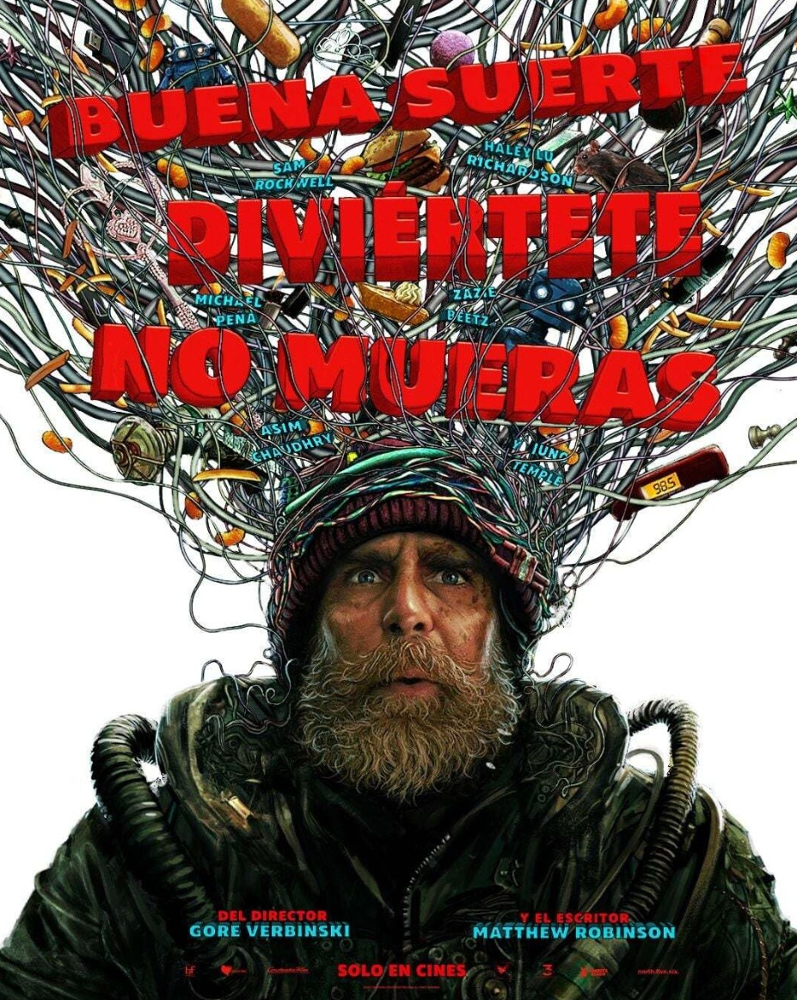
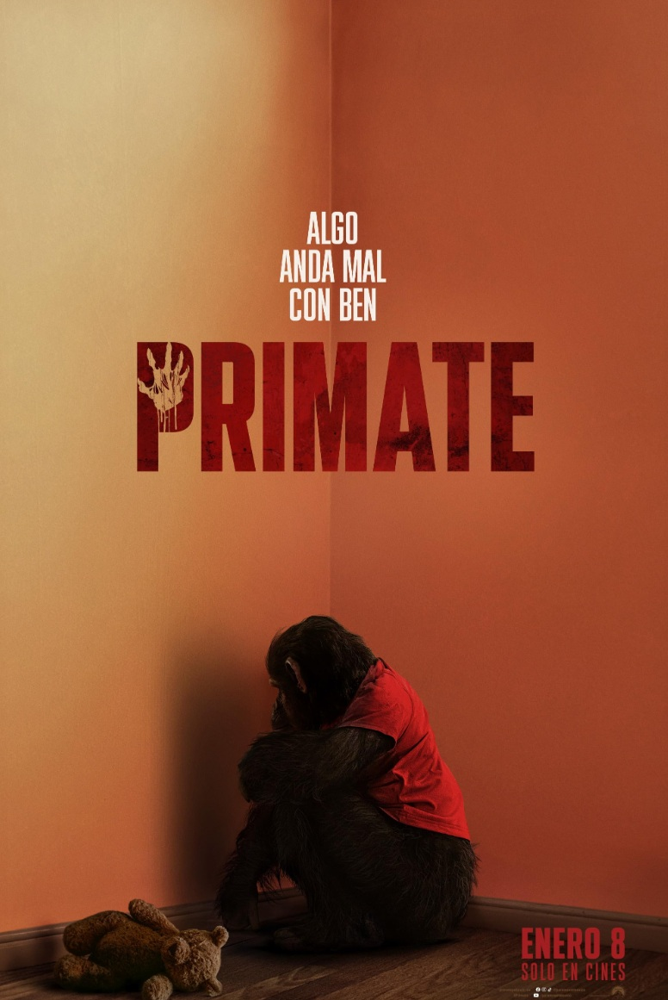
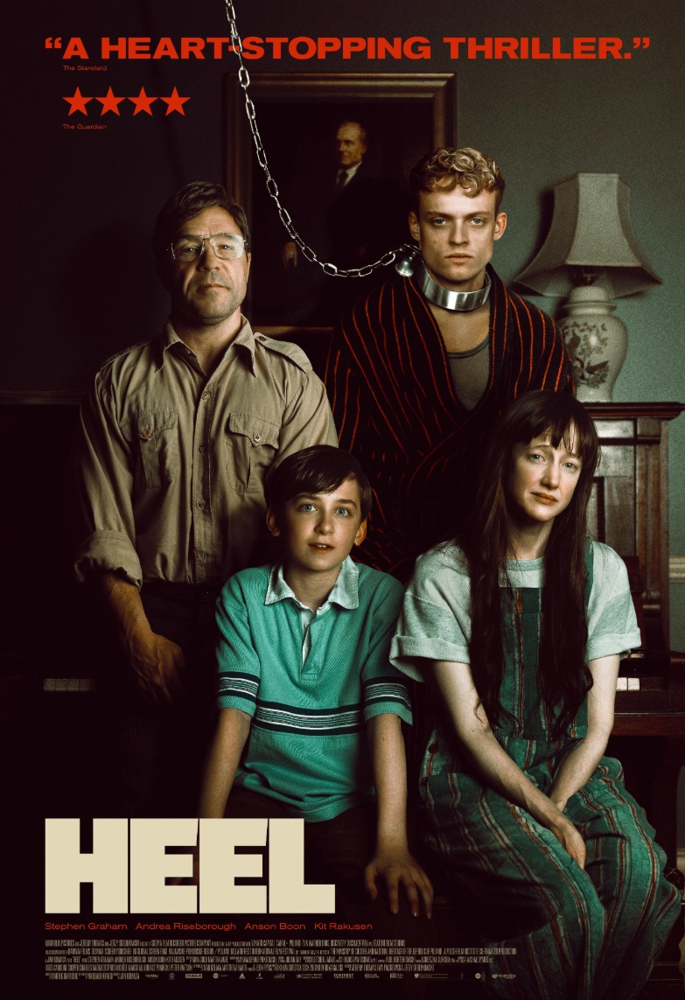
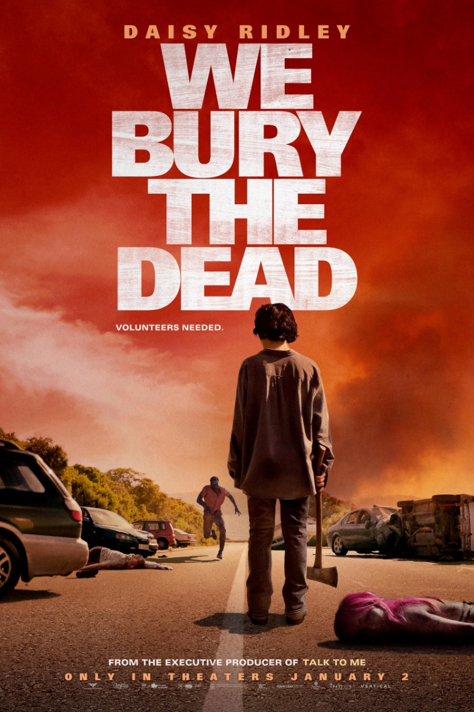

ALERTA DE EXTINCIÓN
Un hongo almacenado en una instalación gubernamental sale al exterior y causa estragos en el mundo.
- Género: Ciencia Ficción
- Año: 2026
- Duración: 1h 48min
- Director: Jonny Campbell
- Productores/as: Derek Ambrosi, Angelo Barbagallo, Raphaël Benoliel
- Calificación general: 7.0/10
- Clasificación por edad: +18
- Plataformas: Apple TV
Tráiler
REPARTO
ROB COLLINS
SOSIE BACON
LIAM NEESON
LESLEY MANVILLE
JOE KEERY
RESEÑAS DESTACADAS
Calificación: 6.0 / 10
Keikoyoshikawa dice:
Sorprendentemente bueno
Debo admitirlo: me cansé de ver a Liam Neeson en películas de acción de viejos
años. Así que fue una agradable y bienvenida sorpresa verlo en esta película de
ciencia ficción, terror y comedia.
Historia ajustada, buena acción, buena actuación. Los personajes no hacían
(en su mayoría) tonterías. Las acciones y reacciones creíbles son lo que genera la
inmersión. En general, fue una película corta y divertida de ver.
Un agradecimiento a Joe Keery y Georgina Campbell —como Travis y Naomi—
por sus interpretaciones, que realmente ayudaron a vender la historia.
Calificación: 6.0 / 10
FiftyTwo_52 dice:
Hongos entre nosotros: mohosos pero muy divertidos
Cold Storage es exactamente lo que promete: una comedia de terror ligera y algo
absurda que no se alarga demasiado.
Si estás sintonizando el encanto combativo de Joe Keery o la valentía constante
de Georgina Campbell, no te decepcionará... Llevan el caos con facilidad. Liam
Neeson aparece principalmente por gravedad, lo cual está bien, aunque
desearías que tuviera más que hacer.
La premisa impulsada por hongos es terreno familiar, y sí, puedes anticipar la
mayoría de los momentos. Pero está bien. Esto no intenta reinventar la rueda;
Solo busca una atracción divertida y amigable para palomitas. El tono equilibra
risas y saltos sin inclinarse demasiado hacia un lado o otro.
Perfecto para una noche relajada en casa cuando quieras emociones con las
criaturas sin el esfuerzo mental.
6,5/10: No revolucionaria, pero sí muy disfrutable.
Calificación: 7.0 / 10
HardyReviews_ dice:
Disfrutable y relajante
"Cold Storage es una comedia relajante con momentos memorables. Esta
película tiene algunos efectos visuales aproximados, pero los efectos prácticos
son realmente impresionantes. Todos los implicados hicieron de esta película
una gran película de ver y es una película que puedes ver con familia y amigos, y
todos lo pasaremos genial."
Calificación: 7.0 / 10
Cahidi dice:
Almacenamiento en caliente
"Desde The Last Of Us, la idea del apocalipsis zombi basado en hongos se ha
extendido como la pólvora. Todo el mundo está haciendo películas similares,
añadiendo sus propios giros. Este no es diferente. Y la particularidad de este es
que el hongo se propagó muy rápido. Como mil veces más rápido que un hongo
normal. Bien. Personalmente, creo que es una comedia de terror decente.
Algunas personas se quejan de esto y aquello. Pero sinceramente, no tengo ni
idea de qué están hablando. Deberías verla y formar tu propia opinión."
Calificación: 1.0 / 10
Luv2Spooge dice:
No es nada que disfrutara de esto.
"Cuando tienes una comedia americana y empiezas con gente hablando mucho
sin motivo, sabes que esto es una completa tontería. Y... Lo es.
Déjame decirlo así: se tarda 50 minutos en descubrir la exposición al hongo. 50
minutos en una película que dura 1 hora y 30 minutos. Y no es un spoiler, ya que
la escena de introducción ya reveló que el elemento de terror es el hongo.
Así que literalmente el resto de esta película es CGI barato y totalmente inútil.
1/10."
RELACIONADOS

BUENA SUERTE, DIVIÉRTETE, NO MUERAS
Calificación: 7.0/10
DURACION: 2h 14min

PRIMATE
Calificación: 5.8/10
DURACION: 1h 32min

GOOD BOY
Calificación: 6.8/10
DURACION: 1h 50min
